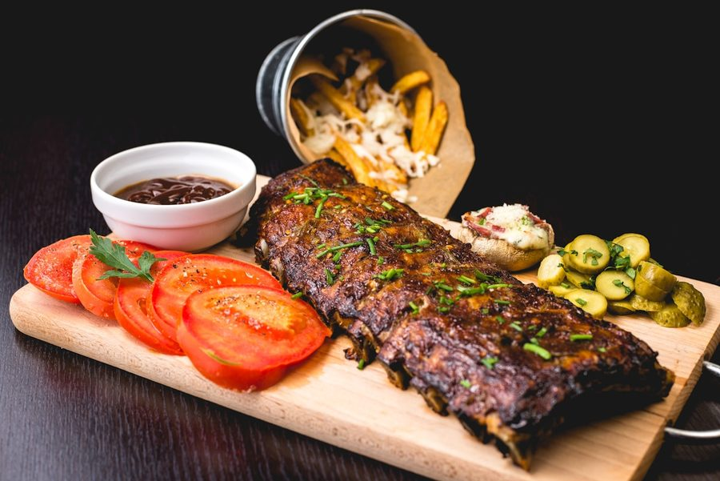
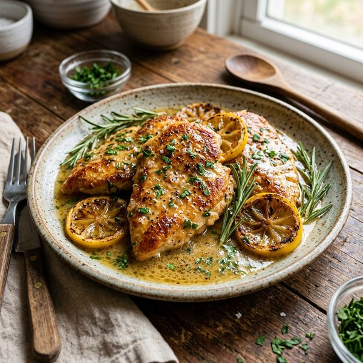
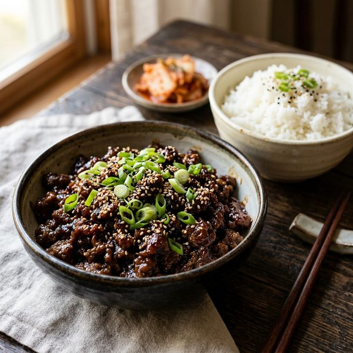
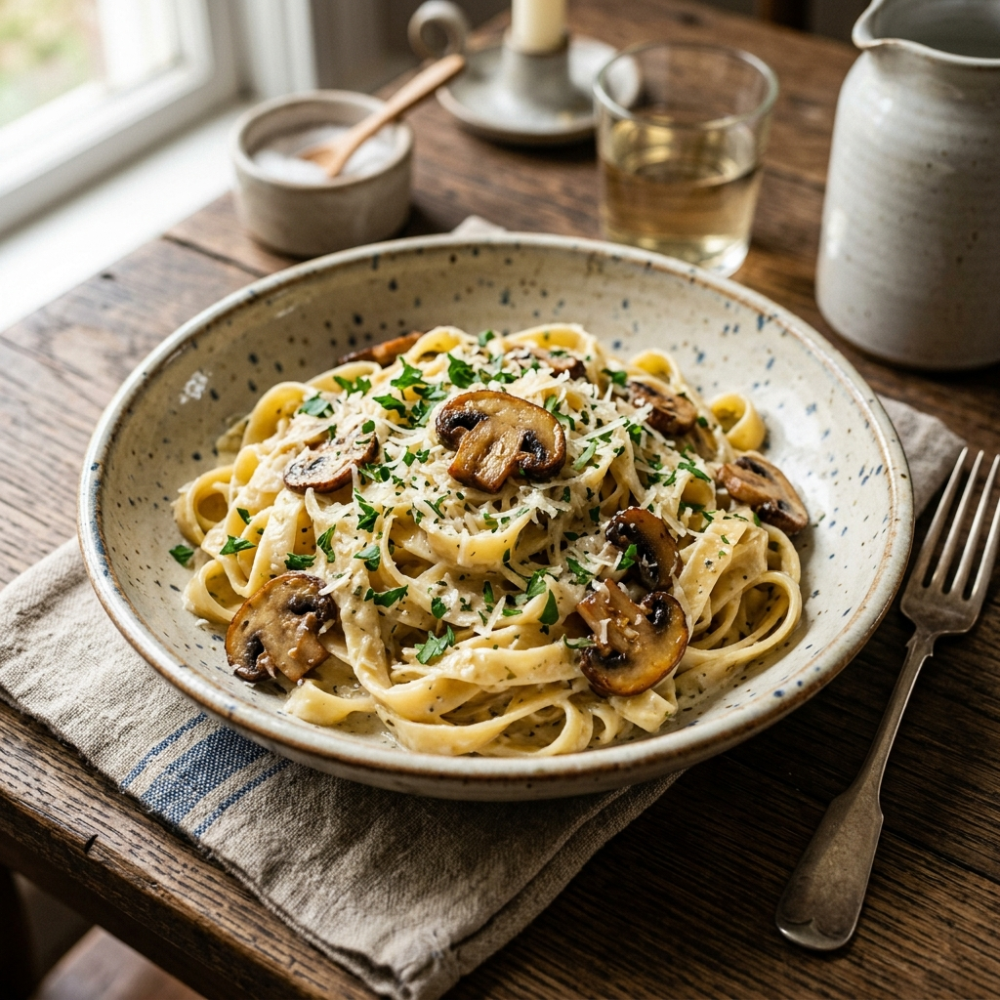
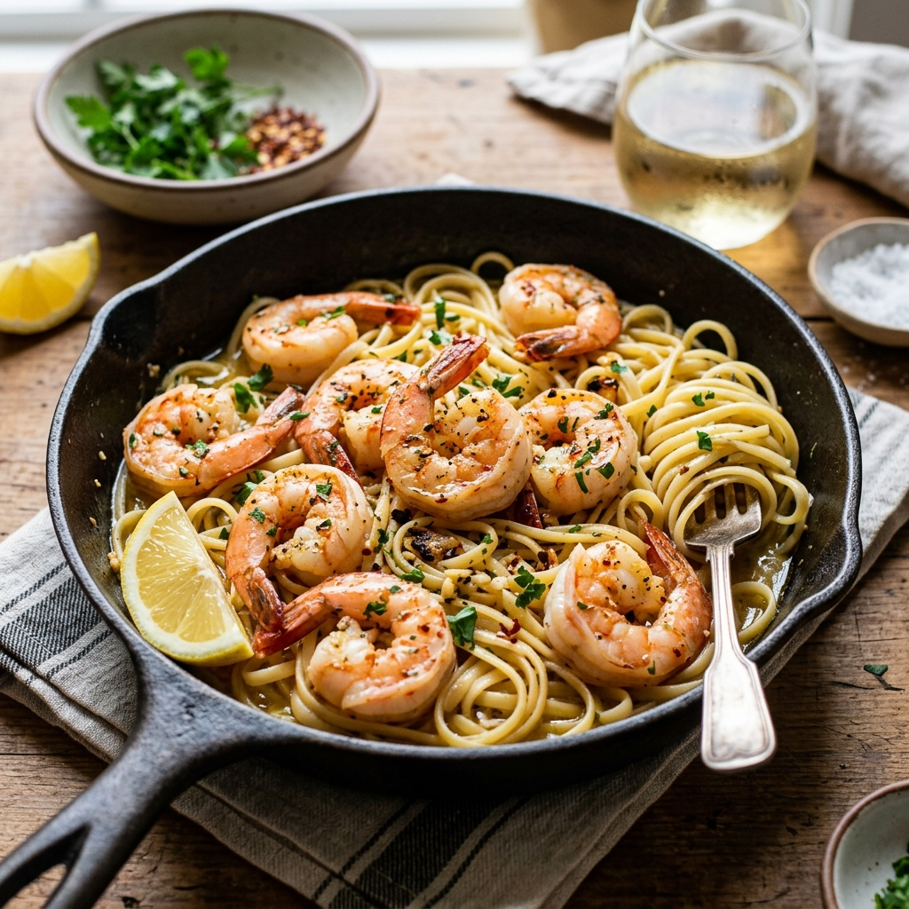
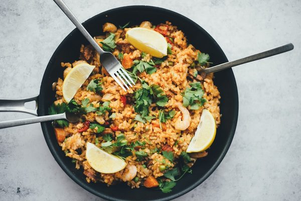
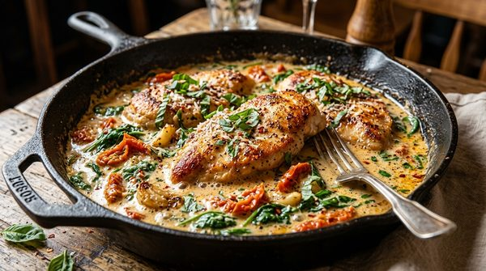
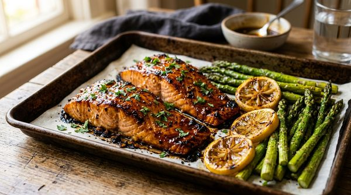
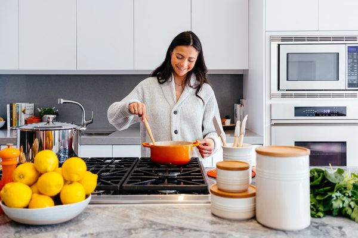

15-Minute Meals

Crispy Garlic Butter Steak Bites
Tender, juicy sirloin steak bites seared in foaming garlic herb butter with a crispy golden crust. Steakhouse flavor in 15 minutes!
Say goodbye to 7 PM dinner dread and sink pileups. Explore triple-tested 30-minute recipes made with everyday supermarket staples that your whole family will devour.

Tender, juicy sirloin steak bites seared in foaming garlic herb butter with a crispy golden crust. Steakhouse flavor in 15 minutes!

Golden pan-seared chicken cutlets bathed in a bright garlic, fresh rosemary, oregano, lemon, and butter pan sauce.

Sweet, savory, and garlicky Korean ground beef simmered in soy sauce, sesame oil, and ginger over steamed jasmine rice. Ready in 15 minutes!

Tender fettuccine tossed with golden sautéed cremini mushrooms in a velvety garlic parmesan cream sauce. Ready in 20 minutes!

Plump, juicy jumbo shrimp tossed in a silky white wine, garlic, and lemon butter pan sauce over al dente linguine. Ready in 15 minutes!

Tender velveted beef ribbons and vibrant crisp broccoli florets glazed in a savory garlic-ginger soy sauce. Faster than takeout!
Juicy seasoned chicken breast strips, crisp bell peppers, and caramelized onions roasted together on one baking sheet in 25 minutes!

Tender golden chicken cutlets in a velvety garlic parmesan cream sauce with sun-dried tomatoes and fresh baby spinach. One skillet, 25 minutes!

Succulent salmon fillets and tender asparagus roasted on a single sheet pan with a finger-licking caramelized garlic honey glaze.

Cheese tortellini simmered directly in rich garlic tomato cream with wilted spinach and shaved parmesan. Ready in just 15 minutes!

No boiling required! Potato gnocchi roasted crisp outside and pillowy inside with smoked sausage coins and caramelized bell peppers.

Discover the 19 essential shelf-stable and freezer staples that unlock 50+ rapid weeknight meals with zero last-minute grocery runs.